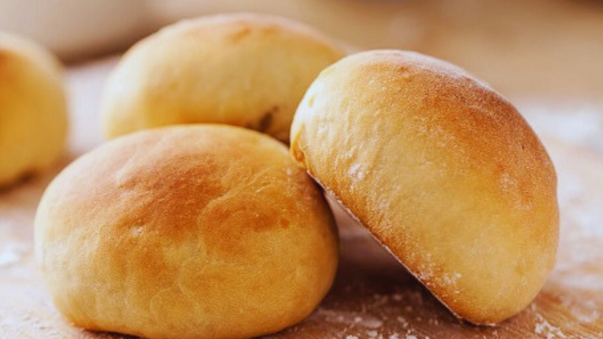

Catálogo de Receitas
Feito por André
Pão de batata:

Pão de Batata
Ingredientes:
- 1 ovo
- 2 colheres (sopa) de açúcar
- 2 colheres (sopa) de margarina derretida
- ½ pacote de fermento seco
- 1 colher (chá) de sal
- 500g de farinha de trigo
- 200ml de leite morno
- 1 batata cozida grande amassada
Modo de Preparo:
- Adicione o ovo, o açúcar, a margarina, o leite, a batata e o fermento e misture um pouco.
- Adicione metade da farinha, misture, adicione o sal e o restante da farinha
- Misture bem e coloque na bancada para sovar.
- Sove de 10 a 12 minutos.
- Deixe descansar por 20 a 30 minutos.
- Divida a massa e faça bolinhas.
- Coloque na assadeira e deixe descansar por 1 hora.
- Leve ao forno pré-aquecido à 180º até ficar dourado.